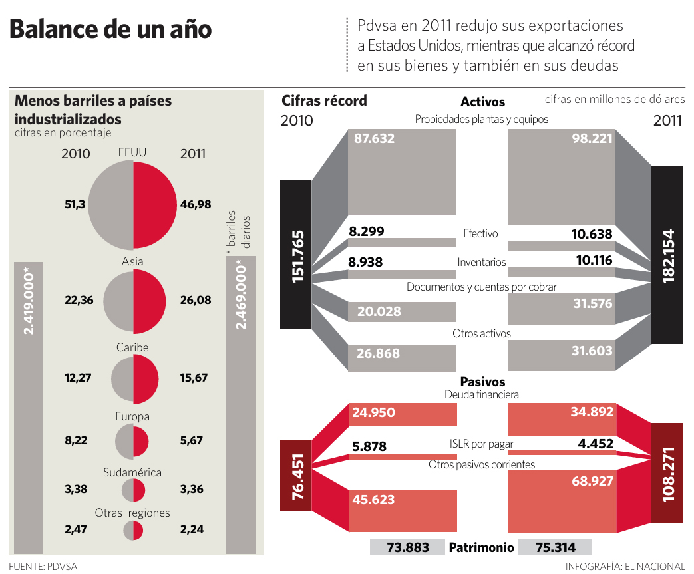

Balance de un año
Data VisualizationContext
This infographic was produced to summarize the financial performance of the Venezuelan state oil company PDVSA. The objective was to present key changes between 2010 and 2011, including exports, assets, liabilities, and equity.
Challenge
The information involved multiple financial categories that are usually presented in tables and long reports. The challenge was to transform those figures into a visual format that would allow readers to quickly understand the main changes in the company’s financial structure.
Design Approach
The graphic combines multiple visualization techniques. A series of proportional pie charts shows how oil exports changed by region, while a mirrored structure compares assets and liabilities between both years.
Information Structure
The layout was organized around three main sections: export distribution by region, assets and liabilities comparison between years, and the overall financial balance.
